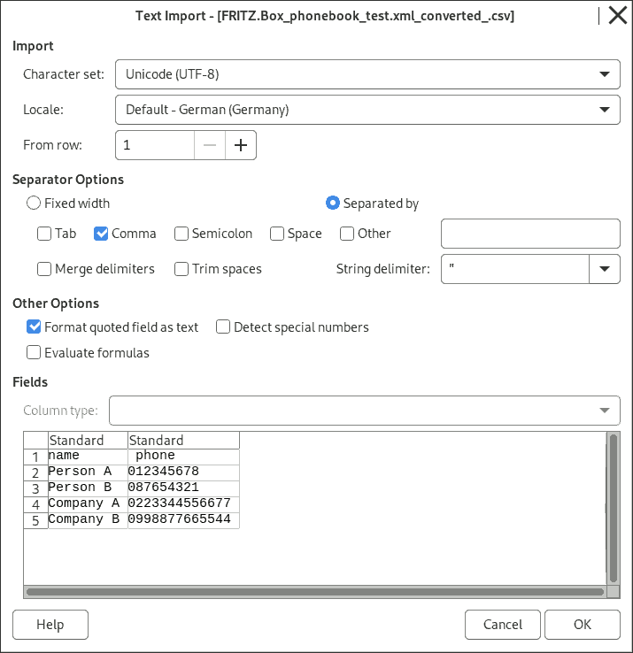
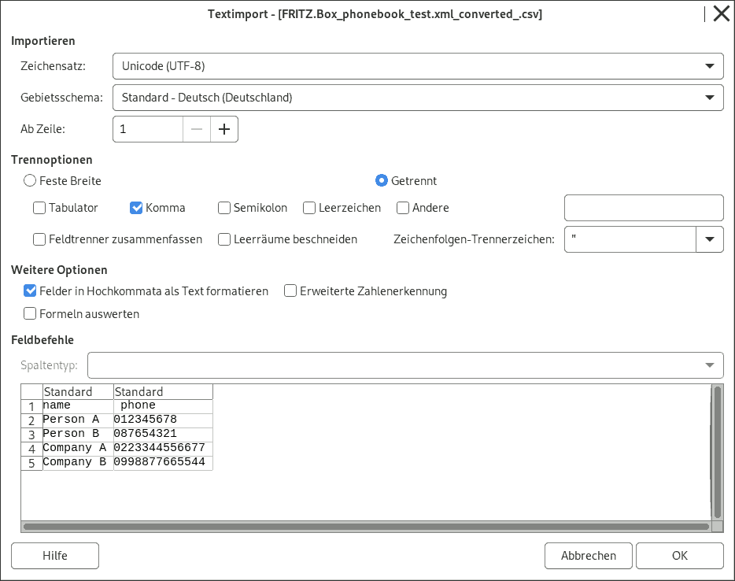

🇬🇧 🇩🇪 Phonebook Contact convert for Fritzbox
Telefonbuch Kontakte konvertieren für Fritzbox
Converts Fritzbox-XML-Files to/from .CSV or .VCF(vcard)-File with Phone Numbers.
Konvertiert Fritzbox-XML-Dateien zu/von .CSV oder .VCF(vcard)-Dateien mit Telefonnummer
You need JavaScript, to use this service.
From Fritzbox .XML File:
Ready. Check now your download folder
Fertig. Überprüfen Sie Ihren Download-Ordner
Please Note: There was three files created. There have different vcard Version (v2.1 , v3.0 , v4.0). Which file you need may depends on your target.
Bitte beachten Sie: Es wurden drei Dateien erstellt. Es sind verschiedene vcard Versionen (v2.1 , v3.0 , v4.0). Welche Datei Sie benötigen, kommt auf ihr Ziel-Programm an.
From .CSV File:
From .VCF File:
close text source window
schließe Text-Fenster
show text source window
Text-Fenster anzeigen
⚙ Settings
⚙ Einstellungen
Settings
Uploaded file
Hochgeladene Datei
Show only supported files (.xml / .csv / .vcf / ~) ( only these are selectable in file upload window/dialog in browser )
Zeige nur unterstützte Dateien (.xml / .csv / .vcf / ~) an ( nur diese sind auswählbar im Datei-auswählen Fenster im Browser )
Automatic detection of file-type
Automatisch Datei-Type feststellen
(detected by file-extension .xml / .csv / .vcf /.vcard /or MIME-Type ; Otherwise you will be ask)
* to xml (=import to fritzbox)
Detect mobile phone-number (if already not set). (to fit in the number categorie)
Mobilfunk-Nummer automatisch erkennen (wenn noch nicht festgelegt). (damit die Nummern Kategorie passt)
Therefore, set your own country:
Dafür ihr Land festlegen:
-
xml to * (=export from fritzbox)
Add your Telephone country codes:
Ihre Land-Vorwahl hinzufügen:
(if missing) Example: +49 or 0049 for germany.
(wenn sie fehlt) Beispiel: +49 oder 0049 für Deuschland.
Add your local Area (City/Town) code:
Ihre lokale Stadt/Orts-Vorwahl hinzufügen:
(if missing) Example: 030 for City Berlin in Germany.
(wenn sie fehlt) Beispiel: 030 für die Stadt Berlin.
xml to csv (=export from fritzbox)
How to handle multiple phone numbers per each Person entry:
Wie mit mehreren Telefon-Nummern je Personen-Eintrag umgegangen werden soll:
Each table-row can have multiple phone-numbers (= multiple columns)
Jede Tabellen-Zeile kann mehrere Telefon-Nummern enthalten (=mehrere Spalten)
Example output:
Each table-row has only a single phone-number (per row )
Jede Tabellen-Zeile darf nur eine einzelene Telefon-Nummer enthalten (je Zeile)
Example output:
Each table-row has only a single phone-number (per row ) and has addational data: phone type-categorie (=mobile,privat,work,work_fax), priority (=imported person), email-adress, addational quick-dial and telephone book search-Number("Vanity")
Jede Tabellen-Zeile darf nur eine einzelne Telefon-Nummer enthalten (je Zeile) und hat zusätzlich: Telefon Type-Kategorie (=mobile,privat,work,work_fax), Priorität (=wichtige Person), Email-adresse, sowie Kurzwahltaste und Telefonbuchsuche-Zahl("Vanity")
Example output:
csv to xml (=import to fritzbox)
How to handle multiple phone numbers per each Person entry:
Wie mit mehreren Telefon-Nummern je Personen-Eintrag umgegangen werden soll:
Merge to a single entry
Einträge zusammenfassen
Phone-numbers with the same name will be merged to a single Entry.
Telefon-Nummern mit den selben Namen werden zusammengefasst als ein Eintrag.
Example csv input:Person A, +4940-1234, +4940-567 Person A, +4940-1234 (Headline: name ; phone ; mobile/home/work/fax_work ; 1 (=for important contact) ; e-mail-adress ; quickdial ; vanity ) Note about important person ("prio "): If a single number is prio , all entrys of this person name will be prio .
Anmerkung zu wichtige Personen ("Prio"): Wenn irgendeiner der Einträge einer Person als wichtige Person markiert ist, wird das auch für alle anderen Einträge diese Person übertragen.
Split entrys:
Teile Einträge auf:
Maximal
phone numbers are allowed per each entry. Then create a 2nd,3th,... entry (with the same name).
Telefon-Nummern sind erlaubt für jeden Eintrag. Dannach wird eine zweiten,dritter,... Eintrag (mit den selben Namen) erstellt.
Example: on device Fritzbox 7390 : That device allow normally maximal 9 numbers per each entry. But it looks like, you can also import entry with more numbers. But, then you will get some problem or error: you can't delete the last phone numbers (>9), but they are still editable. ( Maybe other problems possible.) My advise: Bedder set split to 9 - or - test yourself how many phone numbers you can add (in Web Interface in Browser fritz.box).
Beispiel: beim Gerät Fritzbox 7390 : Bei diesen Gerät sind normalerweise maximal 9 Telefon-Nummer in jeden Eintrag möglich. Es ist scheinbar trotzdem möglich Telefonbücher mit mehr Telefon-Nummern je Eintrag, zu importieren. Es kommt dann aber zu Problemen oder Fehlern: Die letzten Telefon-Nummern (>9) sind dann nicht mehr löschbar, aber noch bearbeitet-bar. (Möglicherweise andere Probleme möglich.) Meine Empfehlung: Besser bei 9 Telefon-Nummern aufteilen - oder - selber testen wie viele Telefon-Nummern je Eintrag ihre Gerät erlaubt (im der Benutzeroberfläche ( Web-Interface auf fritz.box ) )
xml to .vcf (=export from fritzbox)
Convert to all VCard-Versions at the same time (=you get three files)
Konvertiere in alle VCard-Versionen gleichzeitig (=Sie erhalten drei verschiedene Dateien)
VCard Version:
v2.1
v3.0
v4.0
Improve data of file-version v2.1: (no changes needed here)
Verbessere die Daten von Datei-Version v2.1: (keine Änderungen nötig)
URI-Encoding for name, email. (maybe helpfull for Special Characters, German: Umlauten , empty spaces)
URI-Encoding für Name, Email. (hilf evtl. bei Sonderzeichen, Umlauten, Leerzeichen)
Add to String charset:UTF-8
Füge den Zeichensatz (EN:"Charset") zum Text hinzu
Export addational data:
Exportiere diese weiteren Felder:
phone-type (mobile,work,...)
Telefon-Type (mobile,work,...)
marked Note for important Person (=just a note)
markierung als wichtige Person(nur eine notiz)
Email
Email
At splited (=seperated) files Export:
Bei geteilte dateien export:
Filename: Full Name
Dateiname: Ganze Name
Name of new Phonebook-Name:
Name des Telefonbuches:
That is the shown new Phonebook-Name in the Fritzbox. This is not the filename.
Das ist der neue Telefonbuch-Namen in der Fritzbox selbst. Es ist nicht der Datei-Name.
Convert the same file again Konvertiere die gleiche Datei nochmal
Full Data-Privacy You Privacy are keept: This Page works just on your computer (or offline). Your Data will stay only on your own local computer. No Cloud. It is just pure local JavaScript-Code in your Browser.
You are still unsure, using this?: My Security-Advise:
Option A:
Start Privacy- / Incognito-Mode in your Browser ( e.g. Firefox, Chrome,..) and open again this page. click here with right mouse-click and select "open Link in new private window" / "open in new private Tab" and Tab change (at buttom) )
Convert your files
Important last Step: Close ALL Privacy/Incognito-Mode window afterwards, to finish up / clean up the whole session .
Option B (alternativ) :
Download this Page:
click here or alternative here or
save page in your Browser (e.g.: Menue File -> Save Page - or - press hotkey STRG +s )
open to your Download folder
open the downloaded .html file at your computer. It should be automatically open in your browser (e.g. Firefox, Chrome,.. ).
voller Datenschutz
Diese Seite arbeitet als offline-Programm (reines JavaScript im Browser). Anonymität, Datenschutz ist daher gewahrt. Ihre Daten bleiben nur auf ihren Computer. Keine Cloud. Es ist reines, lokal ausgeführtes JavaScript.
Immernoch unsicher das hier zu nutzen?: Mein Sicherheits-Ratschlag:
Option A:
Den Privat- / Inkognito-Modus in Ihren Internet-Browser ( z.B. Firefox, Chrome,..) starten und diese Seite erneut öffnen.hier klicken mit rechter Maustasten und dann auswählen (oder lange drücken bei Touchscreens) : "Link in neuem privaten Fenster öffnen" / "in neuem privaten Tab öffnen" und in Tab wechsel (unten) )
wandeln Sie nun Ihre Datei um
Wichtiger letzter Schritt: Schließen Sie ALLE ihre Privat/Inkognito-Modus Fenster dannach. Nur so kann die ganze sog. Sitzung gelöscht, also wirklich beendet werden.
Option B (alternativ) :
Download dieser Internet-Seite:
Hier klicken oder
alternativ hier oder
Seite speichern in ihren Internet-Browser wählen (z.B.: Menü Datei -> Seite speichern - oder - Tastenkombination STRG +s )
öffnen Sie den Download Ordner
öffnen Sie die runtergeladenen .html Datei auf ihren Computer. Es sollte sich automatisch in ihren Internet-browser (z.B. Firefox, Chrome,.. ) öffnen.
Help: open .csv in LibreOffice How to open the .csv file in LibreOffice / OpenOffice:
Please select comma as seperator. Under other options : Please select Format quoted fields as text (otherwise the phone-Number may miss the beginning 0 <-- at least in LibreOffice (version 7.4.7.2)-->) 
Hilfe: öffne .csv in Libreoffice So öffnet man die .csv Datei in LibreOffice / OpenOffice:
Bitte als Trenner Komma auswählen. Unter weitere Optionen : Bitte anklicken von Felder in Hochkommata als Text formatieren (ansonsten könnte bei der Telefon-nummer die 0 am Anfang fehlen ) 
About this Service
Über diesen Dienst / Seite
Description:
This is a Web-App, or call it online convert-Service .
Fritzbox .xml to .csv
.csv to Fritzbox .xml
Fritzbox .xml to .vcf / Vcard
.vcf / Vcard to Fritzbox .xml
Other functions:
Multiple Files can be selected and merge before: .csv or .vcf Files. (press STRG while file selection).
open the .csv file in your Office Programm (e.g. LibreOffice).
It's running in directly your browser. ( No need of installation. No server. No Cloud. Only local Programm-Code. )
Beschreibung:
Dies ist eine Web-App, oder nenne es online konvertier Dienst.
Fritzbox .xml zu .csv
.csv zu Fritzbox .xml
Fritzbox .xml zu .vcf / Vcard
.vcf / Vcard zu Fritzbox .xml
Weitere Funktionen:
Mehrere Dateien auswählen und vorher zusammenfügen: .csv und .vcf Dateien können vorher zusammengefügt werden. (beim Hochladen STRG gedrückt halten)
öffne die .csv Dateien in Ihren Office Programm (z.B. LibreOffice).
Es läuft direkt im Browser. ( Es ist keine Installtion nötig. Kein Server. Keine Cloud. Nur lokal ausgeführte Programmcode. )
Alternative Services / Tools
Sourcecode
Or also report error / issue there. Oder auch Fehler melden dort. APGL and | Version: Download this page (without images) https://codeberg.org/soerenj/fritzbox_phonebook_convert_xml_csv_vcf/ ; change-Log/History
https://github.com/soerenj/fritzbox_phonebook_convert_xml_csv_vcf/ ; Change-Log/History